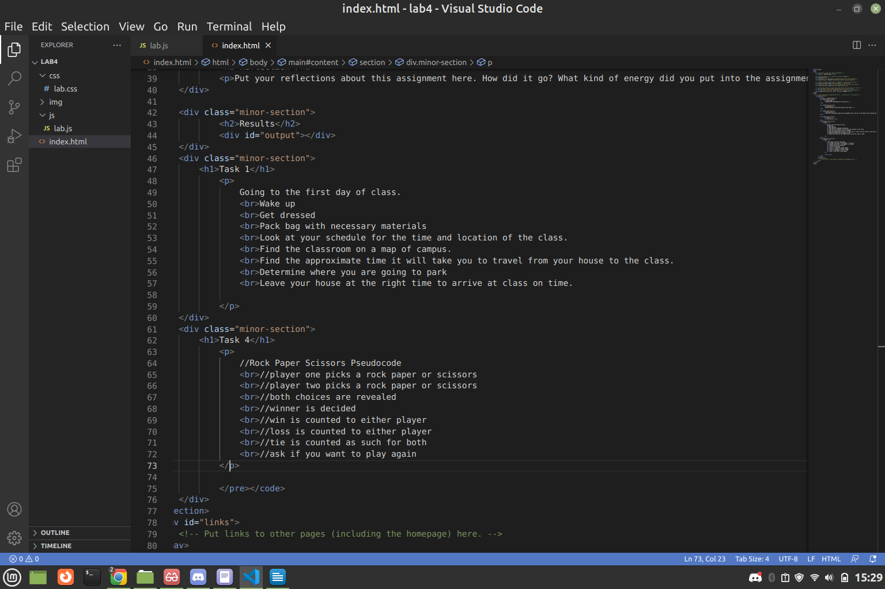
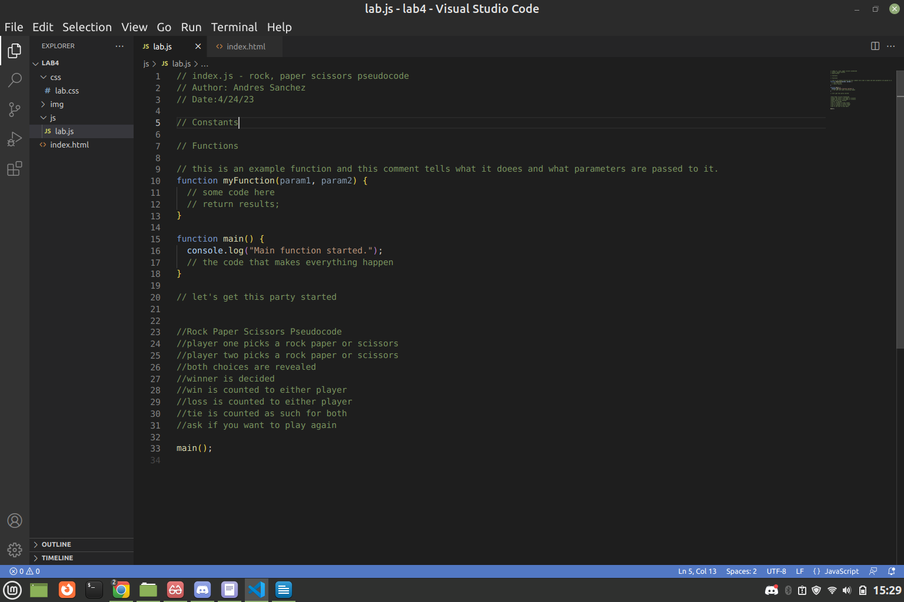
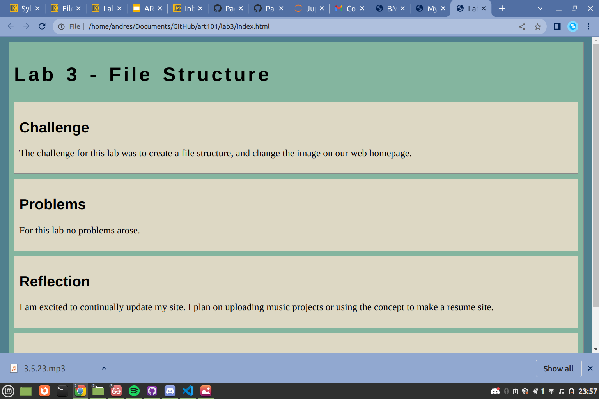

Lab X - Subject/Topic
Challenge
Restate the challenge of the lab here.
Problems
What problems arose? How did you solve them?
Reflection
Put your reflections about this assignment here. How did it go? What kind of energy did you put into the assignment?
Results
Screenshots
Index html file
JS file
Lab 3 page
Task 1
Going to the first day of class.
Wake up
Get dressed
Pack bag with necessary materials
Look at your schedule for the time and location of the class.
Find the classroom on a map of campus.
Find the approximate time it will take you to travel from your house to the class.
Determine where you are going to park
Leave your house at the right time to arrive at class on time.
Task 4
//Rock Paper Scissors Pseudocode
//player one picks a rock paper or scissors
//player two picks a rock paper or scissors
//both choices are revealed
//winner is decided
//win is counted to either player
//loss is counted to either player
//tie is counted as such for both
//ask if you want to play again